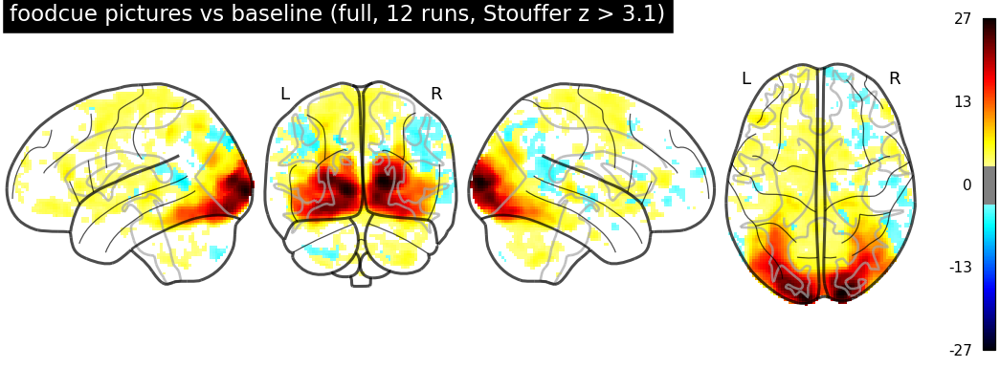

Three people were scanned on six different MRI systems with the same protocol. Their brains didn't change between scanners, so every difference you see between their scans is measurement error. This page walks through what that error looks like for anatomy, resting-state fMRI and task fMRI, and what it teaches about multi-site studies.
Real data from a multi-site traveling-subject study. Sites and volunteers are anonymized: sites are named after Star Wars planets and volunteers after Star Wars characters.
In most studies, every person is scanned at one site. If people at one site look different, you can't tell whether it's the people or the scanner. A traveling-subject study removes that ambiguity: the same people visit every site. Anything that differs between one person's scans is the scanner, the protocol, the software or ordinary session-to-session noise.
One loop, twelve stops, starting and ending at Endor. Drawn without geography: the order of the stops is real, the shape is not.
| Site | Vendor | T1-weighted notes | T1 contrast (CNR) | T1 blur (FWHM, mm) |
|---|
CNR and FWHM are MRIQC image-quality measures averaged over the three volunteers. Higher CNR means more grey/white contrast; higher FWHM means a smoother, blurrier image.
The key comparison is always within a person against between people. If Leia at Endor looks more like Leia at Hoth than like Luke at Endor, the measurement carries an individual signature. If Leia and Luke at Endor look more alike than Leia at Endor and Leia at Hoth, the site is leaving a fingerprint.
The 18 T1-weighted scans (3 people × 6 sites) were run through seven segmentation pipelines. For each person and structure we compute the coefficient of variation across the six sites (standard deviation divided by mean), then average over the three people. Lower is better: it means the volume barely changed from scanner to scanner.
CV in percent, averaged over three volunteers. The best pipeline for the selected structure is highlighted. FSL values for deep structures come from FIRST; one Hoth session failed there, so those use five sites.
Switch between Thalamus, Cerebral cortex and Hippocampus. Which pipeline family is consistently best? Now look at FSL for cortex and white matter. What might go wrong in a tissue-classification method when image quality differs between sites?
Each bar is how far a site's measurement sits from the volunteer's own six-site average, in percent, averaged over the three volunteers.
Tatooine's T1 uses a different sequence (an inversion-recovery fast gradient echo) with the highest grey/white contrast. Pipelines that put boundaries where the intensity changes (FreeSurfer, and FastSurfer, which is trained to imitate it) shrink the thalamus there by 8 to 11%. SynthSeg was trained to ignore contrast and SAMSEG fits its intensity model to each scan, so both barely notice.
Hoth's T1 was reconstructed into 0.5 mm slices by interpolation, not acquired at 0.5 mm. That makes it the blurriest image, and blur pulls the pial surface inward. Every surface pipeline finds the cortex about 7% thinner at Hoth, while cortex volume barely moves. No software choice fixes an acquisition problem.
| Structure (cm³) | FreeSurfer 8.1 | FreeSurfer 7.4.1 | FastSurfer | SynthSeg | SAMSEG | FSL |
|---|---|---|---|---|---|---|
| Cerebral cortex | 474.7 | 474.0 | 472.1 | 525.7 | 462.0 | 462.9 |
| Cerebral white matter | 423.5 | 423.8 | 426.2 | 433.9 | 370.1 | 500.0 |
| Lateral ventricles | 17.1 | 15.7 | 15.7 | 14.9 | 17.8 | 23.4 |
| Thalamus | 14.1 | 14.2 | 14.5 | 14.9 | 12.5 | 16.0 |
| Putamen | 11.3 | 10.2 | 10.4 | 11.7 | 10.8 | 10.3 |
Mean over all 18 sessions. SynthSeg's cortex is 11% larger than FreeSurfer's and FSL's ventricles are 37% larger, far bigger gaps than any site effect. Even two versions of FreeSurfer differ by 10% on the putamen.
Absolute volumes depend on the tool. Pick one pipeline and one version at the start of a study and never change it; switching tools halfway is worse than adding a site.
Each volunteer lay still for 8 minutes at every site. We split the cortex into 200 regions and correlated every region's signal with every other, giving 19,900 connections per scan, the connectome. Then we asked how similar two connectomes are.
Cortical temporal SNR (signal mean divided by its fluctuation). Dagobah used quarter-size voxels in-plane (1.72 mm instead of 3.44 mm), which costs almost half the SNR. Head motion was low everywhere (mean 0.08 to 0.12 mm per volume).
Mean correlation between connectomes, with the range across pairs. Same-person pairs are always from different sites.
Before you look at the right-hand chart: will two different people scanned on the same scanner look more alike than two different people on different scanners? Then compare the second and third bars.
Each cell is how similar a volunteer's connectome is between those two sites (mean over Leia, Luke and Han). Hover or tap a cell.
Select a cell to see the value.
Take the three people's connectomes from one site and match them to the three from another site by highest correlation. Chance is 1 in 3.
83 of 90 matches correct (92%). Matching each scan to its single most similar other scan works for 17 of 18.
For each connection, a two-way analysis splits the variance into person, site and leftover noise. Compare each share with what pure noise would give.
Person explains far more than chance; site explains no more than chance.
The individual signature is in the pattern of 19,900 connections, not in any single one. A typical single connection has a reliability (ICC) of only 0.18. Also notice Dagobah: its SNR was half the others', yet its connectomes matched other sites just as well. Lower SNR does not automatically mean worse data for a given question.
Four sites also ran two tasks. In the Stroop task, a color word appears in colored ink and the volunteer presses the button for the ink color; incongruent trials (RED written in blue) are slower than congruent ones. In the food-cue task, volunteers watch blocks of high-calorie food, low-calorie food and non-food pictures. Tatooine and Dagobah collected no task data, and Naboo's Stroop logs were lost.
Each map combines every run of that contrast (Stouffer z, shown where z > 3.1). Red and yellow are positive, blue is negative. Glass-brain views: left side, back, right side, top.

Open Food vs non-food. The red blob at the back of the brain is early visual cortex responding more to food photos; the blue regions along the side and underside are object-selective cortex responding more to household objects. How much of a "food response" could come from colour and texture rather than appetite?
For each contrast we correlate whole-brain maps between pairs of runs. Same-person pairs are always from different sites. A gap between the teal and grey bars means the map carries an individual signature.
Big contrasts (pictures against fixation, any Stroop trial against rest) give maps with a modest individual signature. The contrasts researchers care most about, high- against low-calorie food and incongruent against congruent Stroop, are small differences between two similar conditions. From one 8 to 15 minute run, those maps are mostly noise.
Pooled over all runs, the Stroop interference map lands exactly where it should: lateral prefrontal, parietal and salience regions. A contrast can be solid at the group level and still unreliable in any one person. Those are different questions and need different amounts of data.
To model task fMRI you need to know when each stimulus appeared. The Stroop logs recorded every onset. The food-cue logs recorded no times at all, only the order of the pictures. The order is fixed and each frame lasts 4 s, but halfway through there is a self-paced break of unknown length. Slide the break below and watch the second half move.
For each candidate break length, build the predicted brain response and fit it to every voxel; keep the length that fits best. The visual cortex responds strongly to pictures, so the fit is sharp when the data are good. Hoth's scan for Leia stopped 5 s after the task's end, and the fit recovered exactly that 5 s break. Two runs had no clear answer and were analysed using only their first half.
A long break pushes the second half of the task past the end of the scan, so less of the model has to fit. Why would that make a long break look artificially good? How would you guard against it?
Ranked from most to least reproducible within a person. For the functional measures the number is how much more similar a person is to themselves at another site than to someone else.
The team's first look at these data in 2017 used one number per scan: T1 contrast-to-noise gave an intraclass correlation of 0.84 across sites, and a Friedman test found no site effect on resting-state SNR (p = 0.19). That was the right quick answer. The 2026 reanalysis, with seven anatomy pipelines and full connectomes, keeps the conclusion and adds the details a single number hides: Tatooine's thalamus, Hoth's cortical thickness, Dagobah's SNR.
Reproducibility asks whether the answer is the same every time; accuracy asks whether it's right. A pipeline can give the same wrong thalamus volume at every site. You'd need a ground truth, such as a phantom, manual segmentation or histology, to measure accuracy.
Without a second scan at the same site, a site effect can't be separated from ordinary day-to-day variation. The cross-site numbers here are an upper bound on site variability.
Not necessarily. The offset is consistent across volunteers, so a site covariate or a harmonization method such as ComBat can correct it. Dropping a site costs participants; modelling it costs one parameter.
Rankings of pipelines and the presence or absence of large site offsets are robust, because each comparison uses every volunteer at every site. Reliability coefficients like ICC with only three people are very unstable and shouldn't be trusted to two decimals.